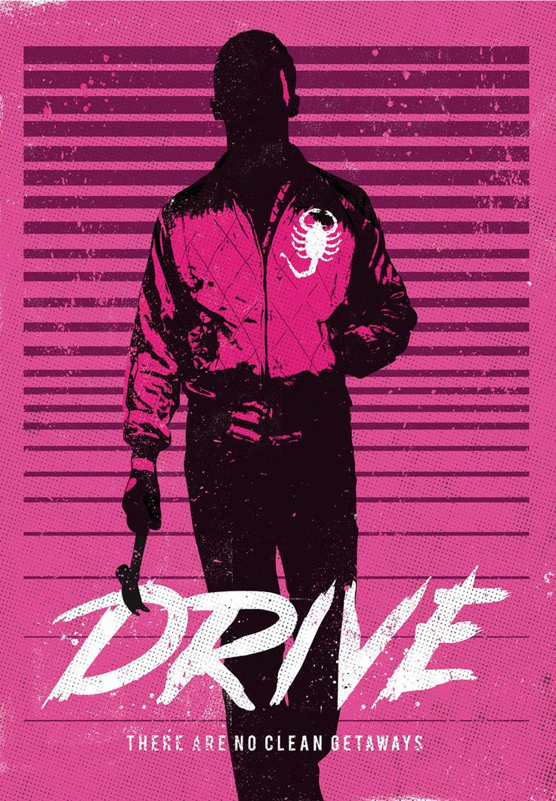
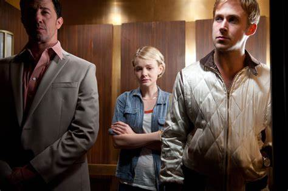
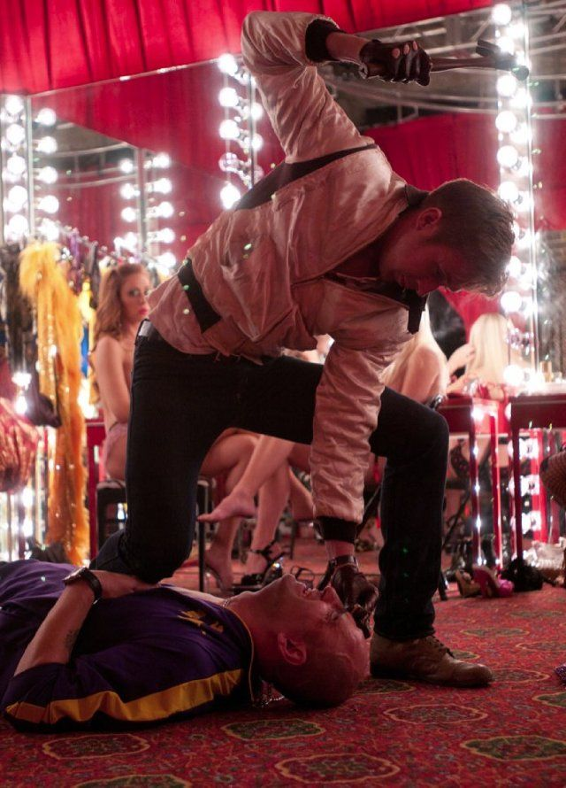

Drive (RYAN GOSLING) es un conductor especialista de cine por el día y un conductor para fugas por la noche. Pero no importa el trabajo que tenga que hacer porque Drive se siente siempre a gusto detrás del volante.
Shannon (BRYAN CRANSTON) es mentor de Drive a la vez que su jefe. Desde que se dio cuenta del talento de Drive al volante, le busca directores de cine y televisión del mundo del entretenimiento o a ladrones que necesitan el mejor conductor para sus fugas, pero llevándose una comisión en ambos casos.
Shannon siempre está planeando la forma de hacer dinero y ahora quiere encontrar un coche de carreras que pueda competir en el circuito profesional. Dado que Bernie Rose (ALBERT BROOKS) es el hombre más rico que conoce, y a pesar de que los orígenes de su dinero son bastante dudosos, Shannon le propone convertirse en su inversor. Después de ver a Drive en acción en la pista de carreras, Bernie Rose insiste en que Nino (RON PERLMAN) sea también su socio.
Drive es un solitario y no le entusiasman los planes que Shannon le busca. Pero su mundo cambia el día que se encuentra con Irene (CAREY MULLIGAN) en el ascensor del edificio donde vive. Cuando vuelve a verla en la tienda de comestibles con su hijo pequeño, Benicio (KADEN LEOS), se queda paralizado y le ofrece ayuda cuando se encuentran de nuevo en el aparcamiento y el coche de Irene no arranca. A partir de ese momento, Drive se acostumbra a llevar a Irene a su trabajo de camarera y a vigilar a Benicio mientras el coche de Irene está en el taller.
Este interludio en la vida de Drive termina bruscamente cuando Standard (OSCAR ISAAC), el marido de Irene, sale de prisión antes de tiempo por buen comportamiento. A pesar de que no ha pasado nada entre Drive e Irene, Standard se siente amenazado por la presencia de otro hombre en su vida familiar. Drive se retira ya que respeta el deseo de Irene de mantener unida a su familia. Pero cuando encuentra a Standard ensangrentado y tirado en el garaje con Benicio a su lado y muy asustado, Drive se enreda mucho más en la vida de Irene. Y es cuando empiezan los problemas....
Reparto

- Driver:Ryan Gosling.
- Carey Mulligan:Irene.
- Bryan Cranston:Shannon.
- :Albert Brooks: Bernie Rose
- :Oscar Isaac:Standar Guzman
- :Christina Hendricks:Blanche
- :Ron Perlman:Nino
- :Jeff Wolve:Tan suit
Produccion y Direccion
- Director: Nicolas Winding Refn.
- Produccion:
- Marc Platt
- Adam Siegel
- Gigi Pritzker
- Michel Litvak
- John Palermo
- Guionista: Hossein Amini.
- Musica: Cliff Martínez.
- Fotografia: Newton Thomas Sigel.
- Montaje: Matthew Newman.

Flores Gonzalez Jese Miguel 2IM5